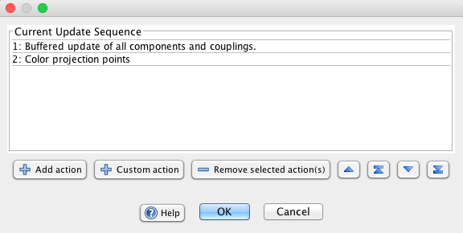

Workspace Updating
When a simulation is run, a sequence of "update actions" occurs at each iteration. These actions can be re-ordered and customized in various ways. To run a simulation use the iterate and play buttons in the main desktop toolbar. The time will begin advancing. On each iteration an update occurs, which by default means all the components and couplings in a workspace are updated.Individual components within a workspace can be run separately from the network. The workspace can also be run in other ways, e.g. from scripts or from the terminal, using the command workspace.iterate(n), which iterates the workspace n times.
Note that workspace update is similar to network update.
Some forms of workspace and component update occur using parallelization, in particular parallel buffered update of network components.
Update Controls and Indicators
Play / Stop:
Continuously run the simulation until the user presses the same button.
Step:
iteration the simulation one time.
Time: When a simulation is run iterations or "simulation time" are tracked. This time is represented in the toolbar, and can be reset to 0 by double clicking on the text label.
Run indicator: While a simulation is running a small animated icon is displayed to draw attention to the fact that the simulation is running.
Simulation delay: Can be used to slow the simulation down from its max speed for easier observation of some processes. See preferences dialog.
Workspace updates occur according to a default buffered update strategy (see below), but this can be customized in various ways. To edit and customize update from the GUI go to File>Edit Updated Sequence... The following dialog will appear:

The main window shows the current list of update actions. By default there is just one action, Buffered update of components and couplings, that will be repeatedly called. On a single iteration of the workspace, the actions in this list will be fired in the order they are listed. The order can be changed by dragging the actions around or using the arrow buttons.
Add action: Adds one of a set of predefined action. These actions are discussed below.
Remove selected actions(s): Remove all highlighted actions in the main window.
Custom action: Creates a custom update action. A script editor opens up, with comments that indicate how to go about creating the custom update action. Users have access to the underlying workspace object and the gui desktop. See scripting for more on how to create these scripts. Note:To edit an existing custom action, double click on it.
Changing update order: To change the order of update actions, drag them around in the update sequence panel or use the arrow buttons.
Move Up In Sequence: Move selected action up one in the sequence.
Move To Top Of Sequence: Move selected action to the very top of the sequence.
Move Down In Sequence: Move the selected action down one in the sequence.
Move To Bottom Of Sequence: Move the selected action to the very bottom of the sequence.
Predefined Update Actions
When pressing the Add action button a dialog appears showing a series of redefined update actions. Which actions appear depends on the state of the workspace. An action appears for each workspace component, and for each coupling. By removing the default buffered update action, and then combining component and coupling updates in specific orders, sequences of actions can be created that are not asynchronous and do not have a time lag in the way buffered update does.
Note: Any update action can be added multiple times, so that (for example) on each iteration a single component gets updated multiple times, or buffered update happens more than once.
Note: If buffered update is removed, care must be taken since when new components and couplings are added to the workspace, they will not automatically be put in the current update sequence.
Here is a screenshot of the dialog:

Update Types
Buffered Update of all components and couplings
Update order does not matter. The default sequence of events is:
- Update all workspace components
- Update all couplings (uses a buffer so that update order does not matter.)
In this scheme each component is updated in parallel on each update, then the couplings are updated. Information on how this update occurs is in the Updater tab of the property tabs at the bottom of the Simbrain desktop.
Note that in this scheme, there is a time lag between updates. What happens in one component is not "felt" in another until after an iteration of the workspace, since a coupling's producer value must first update to a buffer, then the consumer is updated on the next iteration.
Update Component: This action updates a single component. The name of the component is shown to make it easy to identify.
Update Coupling: This action updates a coupling, pulling the producer value and applying it to the consumer. It is dispalyed as source component > target component.
By pressing the custom update button in the Edit update sequence dialog a window appears that allows you to define a custom update action. In addition to creating custom actions this way, highly customized forms of update, that in some cases bypass all of Simbrain's built in features, are possible. Further discussion of these options is in the scripting docs.